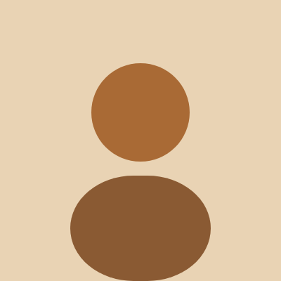

Our story
Three generations of one family, one oven and a lot of early mornings.
The team

Rose Brill, founder
Sam Brill, head baker
Ana Ruiz, pastry chef
What customers say
"The cardamom buns are the best thing in Portland. We drive in from Gorham every Saturday morning just for those."
Maria, Gorham
"They made our wedding cake on four days' notice, and every guest asked where it came from."
Dev and Sam, Portland
"Best sourdough in New England. I have tried them all, and I have the crumbs on my keyboard to prove it."
Tom, South Portland
Since 1987
1987
Rose opens a six-seat bakery on Fore Street.
2004
We move to Commercial Street and add a second oven.
2019
Sam takes over the bread program.